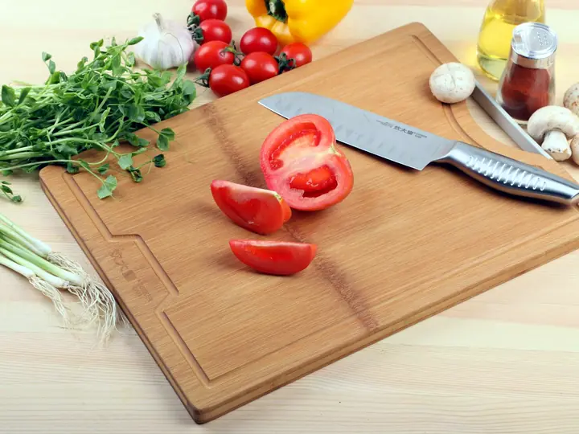

Kitchen
Cutting board
Plastic to wood or bamboo
Every cut scrapes tiny pieces off a plastic board, and some end up in the food. Researchers estimated that a polypropylene board can release about 79 million particles a year.
Source: Consumer Reports, 2025; Yadav et al., 2023